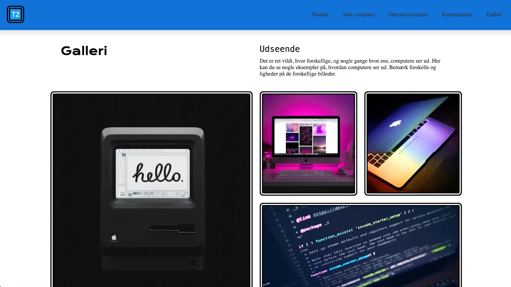
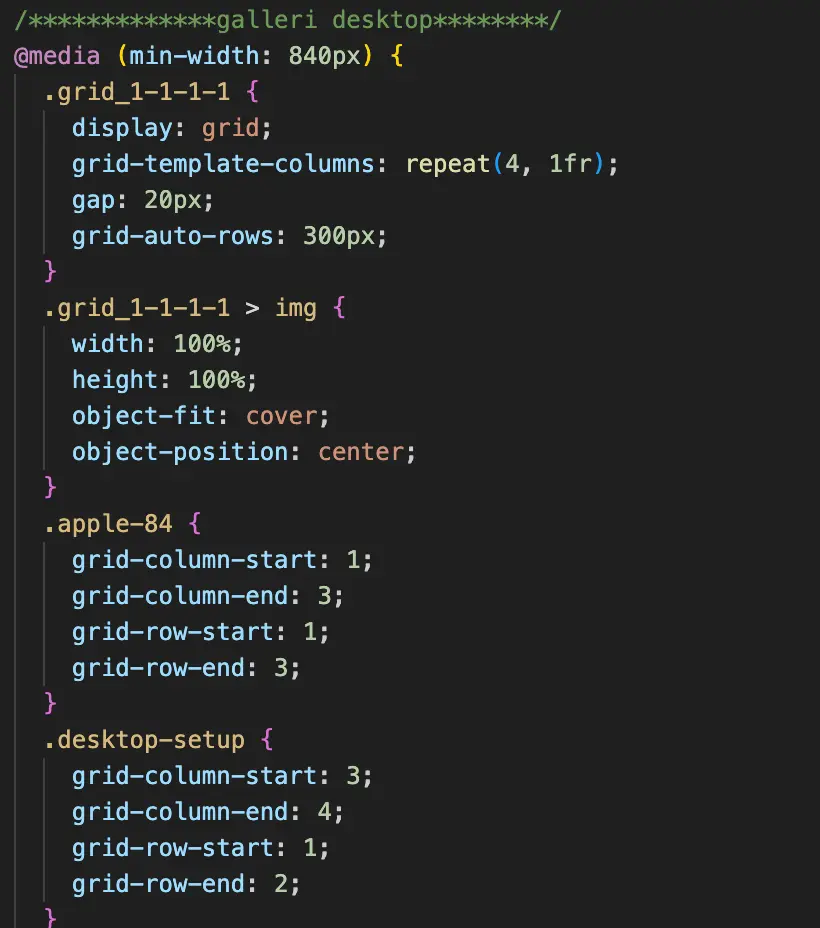

Tema 2 - Grundlæggende web
Grundlæggende web - Formål
Formålet med dette tema var at give en grundlæggende viden og forståelse for de værktøjer, vi kommer til at benytte os mest af i løbet af uddannelsen.
Vi blev introduceret til centrale faglige begreber inden for design af digitale brugergrænseflader, digital indholdsproduktion, digital kommunikation og responsivt webdesign.
Derudover opnåede vi kendskab til designprogrammet Figma samt nogle af de vigtigste designprincipper i forbindelse med opsætning af hjemmesider. Vi arbejdede også med de mest anvendte filformater til web, herunder PNG, JPG og WebP.
Som en del af temaet blev vi introduceret til HTML og CSS og lærte, hvordan en hjemmeside bygges op med udgangspunkt i layoutdiagrammer, grids og en mobile first-tilgang.


Læring og proces
Gennem dette tema er jeg blevet introduceret til Visual Studio Code, hvor jeg har lært at opbygge et responsivt website ved hjælp af grid-containere og div-strukturer. Jeg har arbejdet med at kode layoutdiagrammer i HTML og style hjemmesider ved hjælp af CSS.
Med udgangspunkt i udleveret tekst og billedmateriale har jeg udviklet og stylet mit eget mobilsite. Det færdig-udviklede mobilsite dannede efterfølgende grundlag for studiestartsprøven, som jeg arbejdede videre med i den sidste uge af temaet.
I studiestartsprøven opnåede jeg en bedre forståelse for grid-containere og hvordan man arbejder med grid-rows og grid-columns. Jeg fandt det udfordrende at få placeret billederne korrekt, så de stod i den ønskede rækkefølge og på de rigtige positioner i layoutet. Derudover fik jeg en bedre forståelse for media queries og hvordan man arbejder med skiftet mellem mobil- og desktopversioner i et responsivt design.